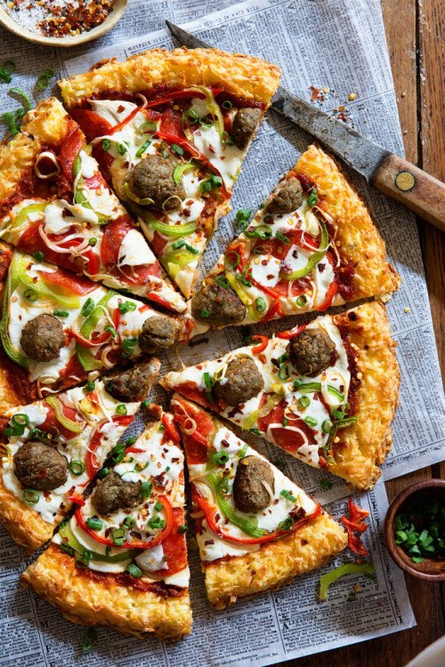

Итальянская кухня представляет разнообразный диапазон свежих и красочных продуктов, объединенных простым способом сохранения своеобразия компонентов. Эта пища приносит удовольствие за общим столом с семьей и друзьями, в сочетании с вином и весельем. Существует множество региональных вариаций приготовления по всей Италии, но в большинстве своем зерновые продукты, такие как паста, хлеб, рис, полента и кускус сочетаются в разнообразии интересных блюд с овощами, бобами, рыбой, домашней птицей, орехами, сырами и мясом. Есть старая пословица, что хорошая стряпня начинается с рынка. Ничто ее так не подтверждает, как подлинная итальянская кухня, которая сильно зависит от свежести продуктов.
